Very minimal notes on some papers or articles that I recently read. Mainly for logging purposes.
Image Recognition
Very Deep Convolutional Networks For Large-Scale Image Recognition
Karen Simonyan, Andrew Zisserman : Apr 2015
Source
Implementation
- Introduces the VGG network that won ImageNet in 2014.
- Deeper ConvNets. Takes input as (224 X 224) RGB and mean image subtracted as preprocessing. Two final FC hidden layers, followed by one FC layer with 1000 outputs. Number of total trainable parameters turn out to be 144 million for VGG-19.
- All the hidden layers use ReLU activations.
- Deeper networks with small filters result in more regularization and less parameters.
- Optimise multinomial logistic regression objective using mini-batch gradient descent with momentum.
- At the end introduces ensemble models by averaging softmax predictions from multiple models.
Going Deeper with Convolutions
Christian Szegedy, Wei Liu, Yangqing Jia, Pierre Sermanet, Scott Reed, Dragomir Anguelov, Dumitru Erhan, Vincent Vanhoucke, Andrew Rabinovich : Sep 2014
Google DeepMind
Source
- Introduces “Inception” with improved utilization of computing resources.
- “We need to go deeper” : But deeper networks come with a cost of large number of parameters, which makes the model prone to overfitting, and dramatically increased use of computational resources.
- Fundamental idea : sparsely connected architectures, even inside the convolutions.
- However, the computing infrastructure is very inefficient when it comes to numerical calculations on sparse data structures. And non-uniform sparse structures require careful engineering!
- Architecture 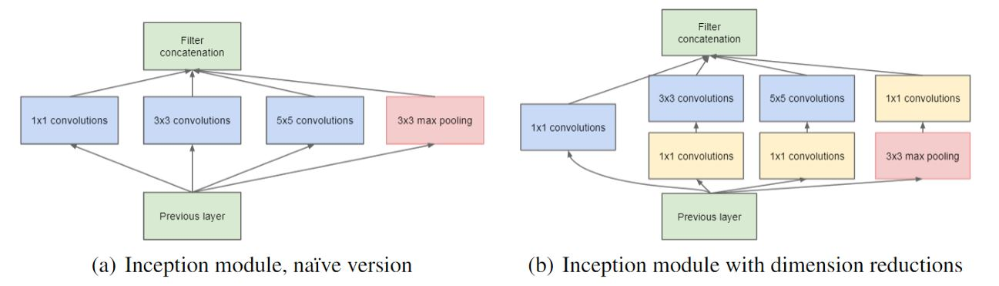
- GoogLeNet
- 22 trainable Layers(100 total layers), low memory footprint.
- Auxillary classifiers are used to allow for efficient gradient propagation. These are used only at training time.
Deep Residual Learning for Image Recognition
Kaiming He, Xiangyu Zhang, Shaoqing Ren, Jian Sun : Dec 2015
Microsoft Research
Source
- Presents residual learning framework(ResNet) to ease the training of networks that are substantially deeper(152 layers!) than those used previously. How to win ImageNet in 2015.
- Problem with deeper networks : Vanishing Gradients : Addressed by intermediate normalization.
- Problem with deeper networks : Degradation, not caused by overfitting.. 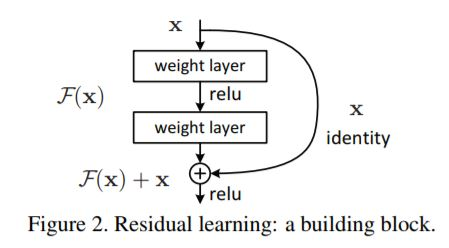
- Introduces residual learning framework by using shortcut connections that can perform identity mapping.
- Using Identity mapping as precondition allows the network to easily learn the identity, if it is a desired mapping. This helps in simplifying networks.
- Plain Network architecture, mainly based on VGG nets.
- Residual Network architecture, insert shortcuts to the plain network.
- The model shows no optimization difficulty even with > 1000 layers..!!
- Finally discusses improvements for detection and localization tasks.
Rethinking the Inception Architecture for Computer Vision
Christian Szegedy, Vincent Vanhoucke, Sergey Ioffe, Jonathon Shlens, Zbigniew Wojna : Dec 2015
Google DeepMind
Source
- Improving upon Inception module and GoogLeNet.
- General guiding principles
- Avoid representational bottlenecks, especially early in the network.
- Higher dimensional representations are easier to process locally within a network.
- Spatial aggregation can be done over lower dimensional embeddings without much or any loss in representational power.
- Balance the width and depth of the network.
- Factorizing Convolutions with Large Filter Size
- Factorize into smaller convolutions.
- This results in reduced parameter count.
- Does this replacement result in any loss of expressiveness?
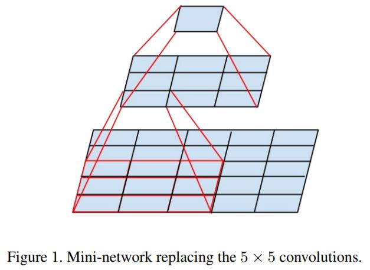
- Factorize into smaller convolutions.
- Spatial Factorization into Asymmetric Convolutions 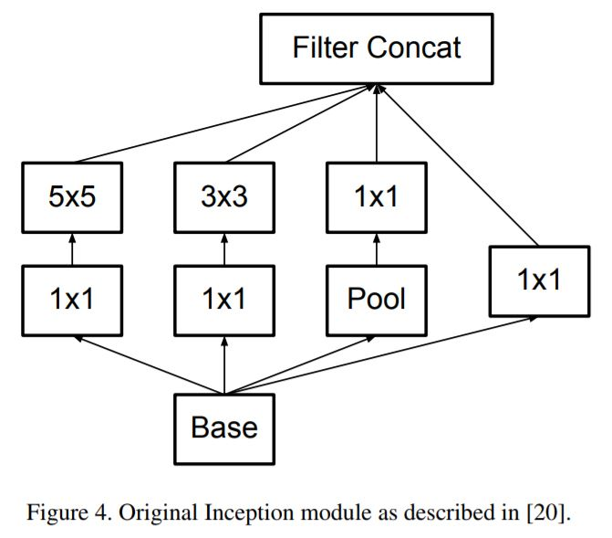 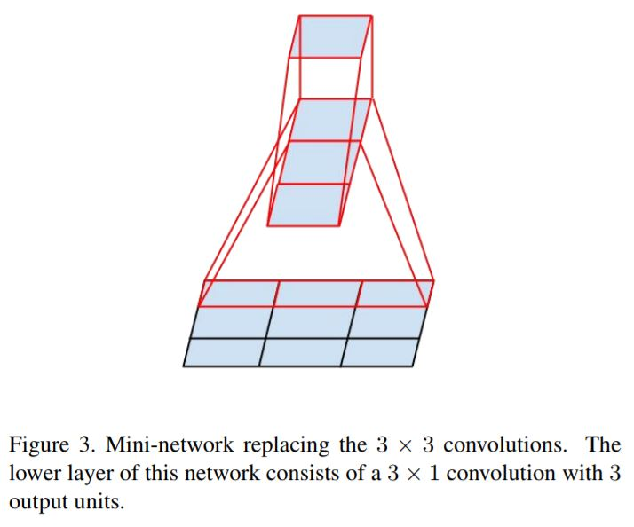
Inception-v4, Inception-ResNet and the Impact of Residual Connections on Learning
Christian Szegedy, Sergey Ioffe, Vincent Vanhoucke, Alex Alemi : Aug 2016
Google DeepMind
Source
- Combining Residual networks with Inception architecture.
- Uniform Inception-v4 blocks are introduced for cleaner architecture.
Xception: Deep Learning with Depthwise Separable Convolutions
François Chollet : Apr 2017
Source
Google Inc.
- Building on top of the inception modules.
- An attempt to make things efficient by decoupling operations for cross-channel correlations and spatial correlations.
- This introduces the Depthwise separable convolutions.
- The Xception architecture then takes these layers and builds a complete network for ImageNet task, with better reported performane than Inception v3.
Deep Visualization
Visualizing and Understanding Convolutional Networks
Matthew D Zeiler, Rob Fergus L : Nov 2013
Source
- Understanding why CNNs perform well on Image Classification tasks.
- Visualizing with a Deconvnet 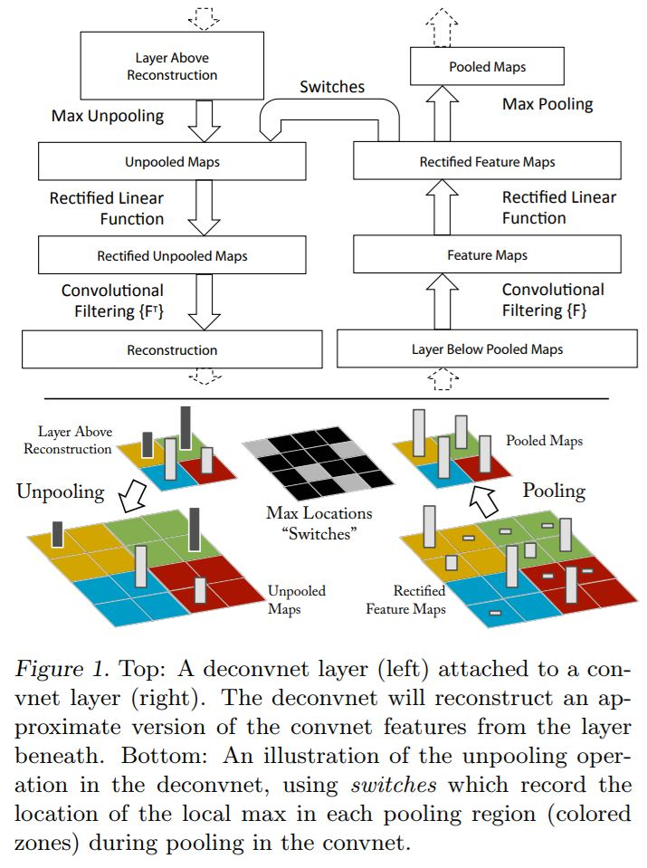
- Feature Visualization 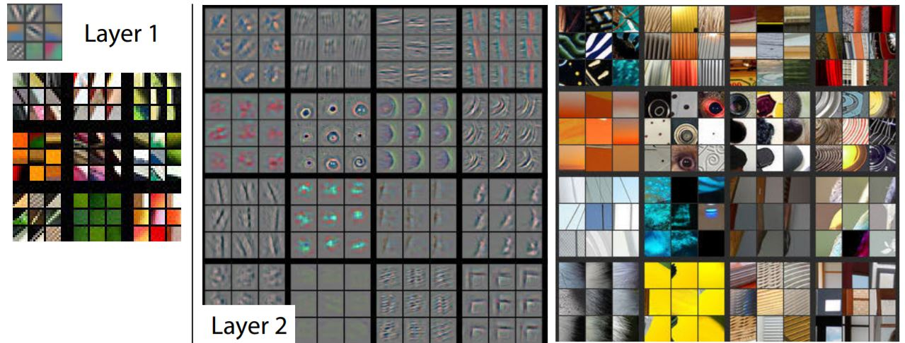 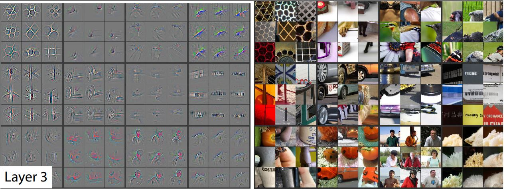 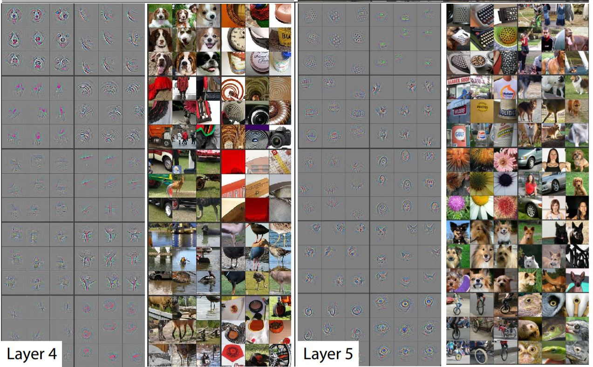 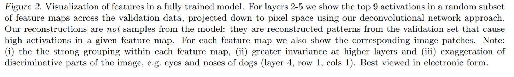
- Feature Evolution during training 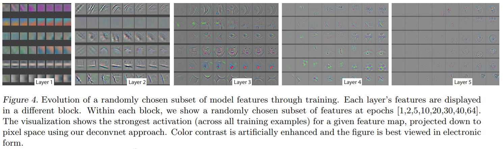
- Feature Invariance
- Occlusion Sensitivity 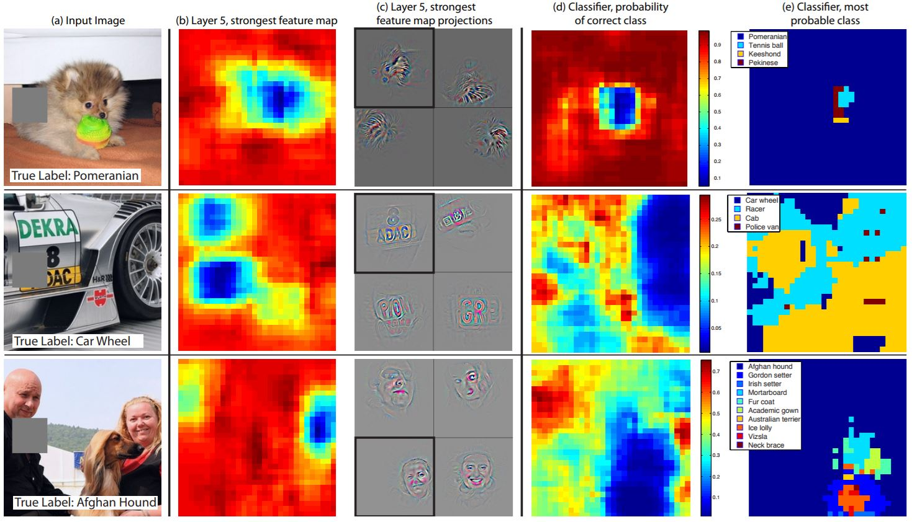 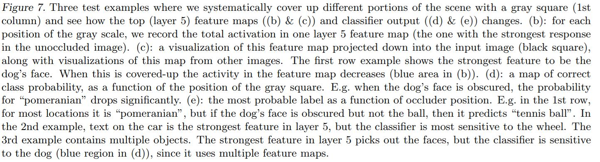
- Correspondence Analysis
Multifaceted Feature Visualization: Uncovering the Different Types of Features Learned By Each Neuron in Deep Neural Networks
Anh Nguyen, Jason Yosinski, Jeff Clune : May 2016
Source
- Researchers have been using activation maximization techniques until now. This assumes that each neuron detects only one type of feature.
- But, we know neurons can be multifaceted. Here multifaceted feature visualization (MFV) is introduced.
- Systematically visualize all facets of a neuron.
- Improve image quality of synthesized images with natural and globally consistent colors. 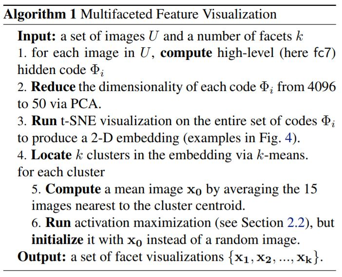
- Center biased regularization is used so that the synthesized images dont have many repeated object fragments.
- This is done by first producing a blurry image, then updating the center pixels more than the edge ones, producing a final image that is sharp and has a centrally-located object.
- This image would have far fewer duplicated fragments. 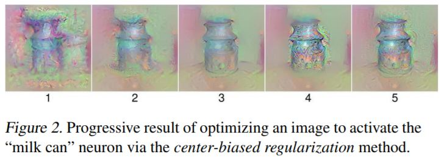
- Visualizing the multifaceted nature of hidden neurons 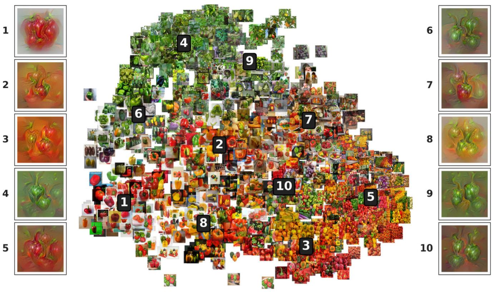 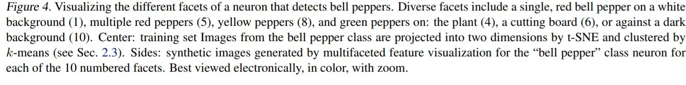
- Discusses various optimization techniques to produce better images in detail : center biased regularization, mean image initialization.
How transferable are features in deep neural networks?
Jason Yosinski, Jeff Clune, Yoshua Bengio, Hod Lipson : Nov 2014
Source
- First-layer features always resembles either Gabor filters or color blobs.
- We also often use the initial layers of a network to initialize other networks(for a different task) in transfer learning. This raises a few questions,
*Can we quantify the degree to which a particular layer is general or specific?
- Does the transition occur suddenly at a single layer, or is it spread out over several layers?
- Where does this transition take place: near the first, middle, or last layer of the network?
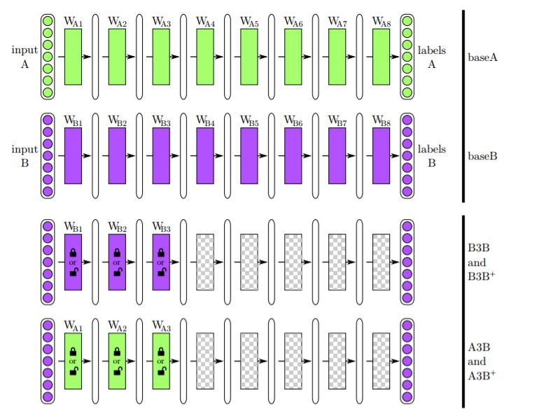
Figure 1: Overview of the experimental treatments and controls. Top two rows: The base networks are trained using standard supervised backprop on only half of the ImageNet dataset (first row: A half, second row: B half). The labeled rectangles (e.g. $W_{A1}$) represent the weight vector learned for that layer, with the color indicating which dataset the layer was originally trained on. The vertical, ellipsoidal bars between weight vectors represent the activations of the network at each layer. *Third row*: In the *selffer* network control, the first $n$ weight layers of the network (in this example, $n = 3$) are copied from a base network (e.g. one trained on dataset B), the upper $8 − n$ layers are randomly initialized, and then the entire network is trained on that same dataset (in this example, dataset B). The first n layers are either locked during training (“frozen” selffer treatment $B3B$) or allowed to learn (“fine-tuned” selffer treatment $B3B^+$). This treatment reveals the occurrence of *fragile coadaptation*, when neurons on neighboring layers co-adapt during training in such a way that cannot be rediscovered when one layer is frozen. *Fourth row*: The *transfer* network experimental treatment is the same as the selffer treatment, except that the first n layers are copied from a network trained on one dataset (e.g. A) and then the entire network is trained on the other dataset (e.g. B). This treatment tests the extent to which the features on layer n are general or specific.
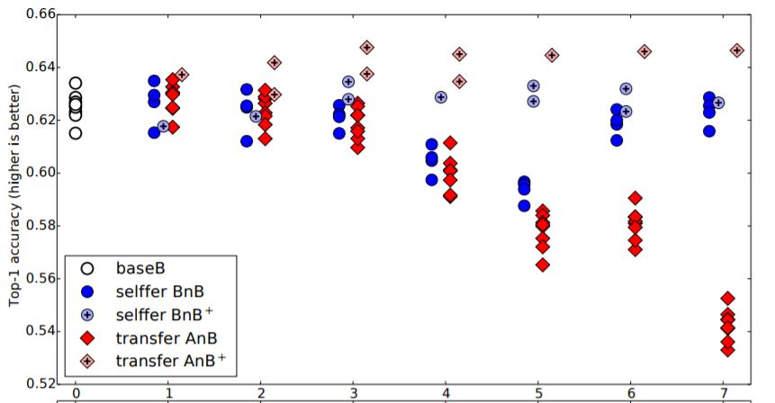
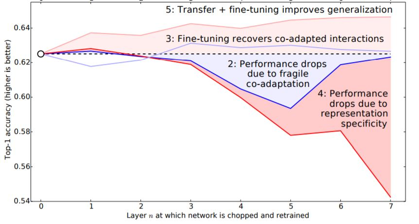
Figure 2: The results from this paper’s main experiment. Top: Each marker in the figure represents the average accuracy over the validation set for a trained network. The white circles
above $n = 0$ represent the accuracy of baseB. There are eight points, because we tested on four separate random A/B splits. Each dark blue dot represents a BnB network. Light blue points
represent BnB+ networks, or fine-tuned versions of BnB. Dark red diamonds are AnB networks, and
light red diamonds are the fine-tuned AnB+ versions. Points are shifted slightly left or right
for visual clarity. Bottom: Lines connecting the means of each treatment.
- Conclusively, transfer learning can be very effective for lower layers for general dissimilar objectives, and for higher layers as well in case of similar objectives.